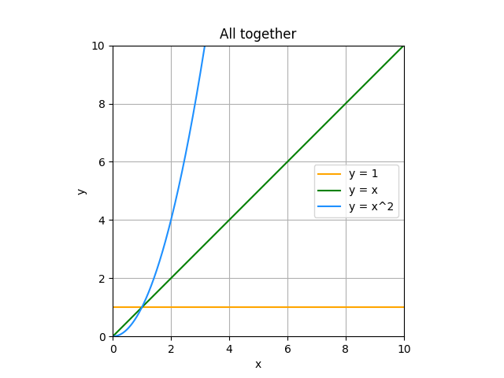

Weighting tomatoes
{kind=link}
Which one is heavier?
You couldn’t weight them by the picture. But you could easily compare them. Comparing is very powerful technique used by us daily.
How to weight algorithm?
Make implementation
Choose computer (CPU, disc, memory)
Choose data
Measure execution time
Can we compare them?
We can compare algorithms if we replace hardware and input with abstraction.
element |
abstraction |
|---|---|
computer and implementation |
abstract operation |
input |
function that return a number of operations for input |
Now to compare our algorithms you need to compare two functions.
Functions that describe complexity
Some function are used so often that they have a name.
Constant
y=1
The Number of operation don’t depends on the input size.
>>> a = [1, 2, 3]
>>> a[0]
1
{kind=link}
Linear
y=x
You have the same number of operations as the data size
>>> a = [1, 2, 3]
>>> [x + 1 for x in a]
[2, 3, 4]
>>> min(a)
1
{kind=link}
Quadratic
y = x**2
You have much more operations than data.
>>> a = 10
>>> for i in range(1, a + 1):
... print(f"{i:4}", end="")
... for j in range(2, a + 1):
... print(f"{i * j:4}", end="")
... print()
1 2 3 4 5 6 7 8 9 10
2 4 6 8 10 12 14 16 18 20
3 6 9 12 15 18 21 24 27 30
4 8 12 16 20 24 28 32 36 40
5 10 15 20 25 30 35 40 45 50
6 12 18 24 30 36 42 48 54 60
7 14 21 28 35 42 49 56 63 70
8 16 24 32 40 48 56 64 72 80
9 18 27 36 45 54 63 72 81 90
10 20 30 40 50 60 70 80 90 100
{kind=link}
All together
{kind=link}
We are looking not into the difference in specific point, but into how difference between them grows with number of inputs.
Quadratic grows much faster than linear. And Constant does not grow at all.
Smart names
That way to compare algorithms by function are called big O notation. Instead of function you use O, and instead of x any letter, but usually n is used.
Name |
Function |
Big O |
|---|---|---|
Constant |
y = 1 |
O(1) |
Linear |
y = x |
O(n) |
Quadratic |
y = x2 |
O(n2) |
Summary
Big O notation is an easy thing. Comparing two function is not a problem. The hard part is calculate the complexity for the function.